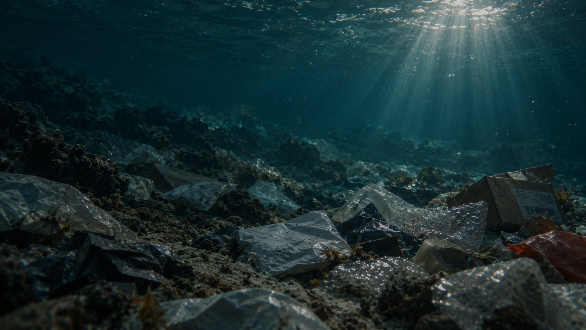
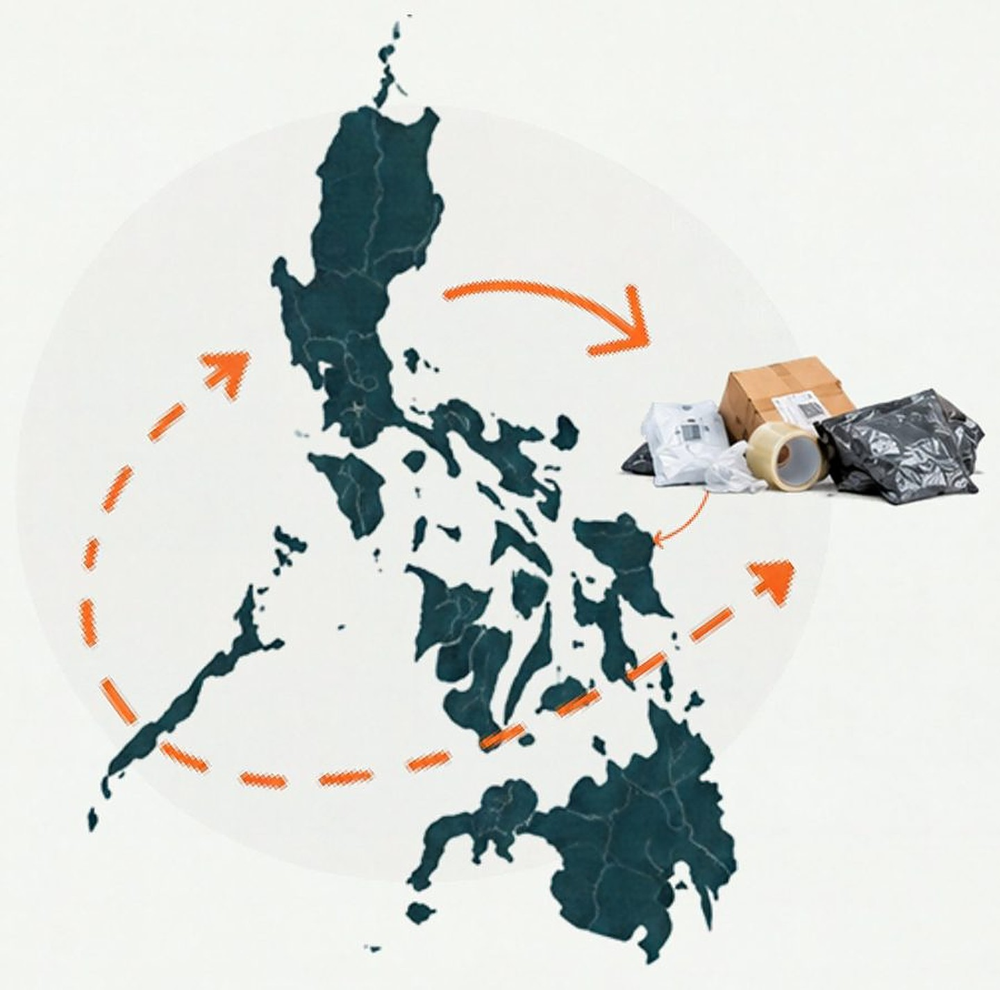
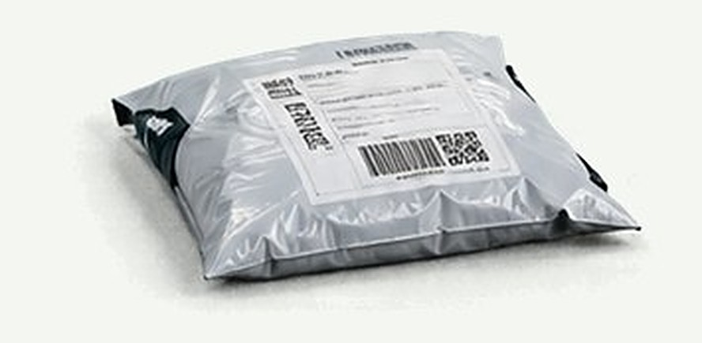
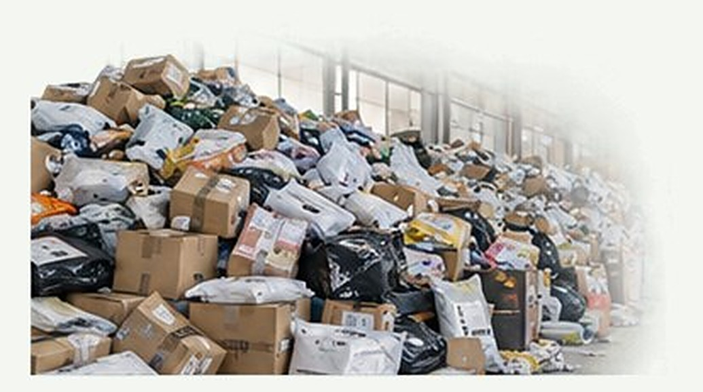
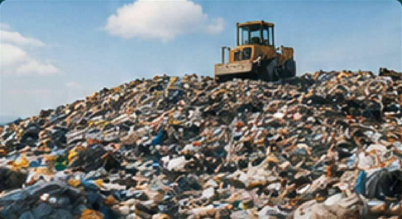
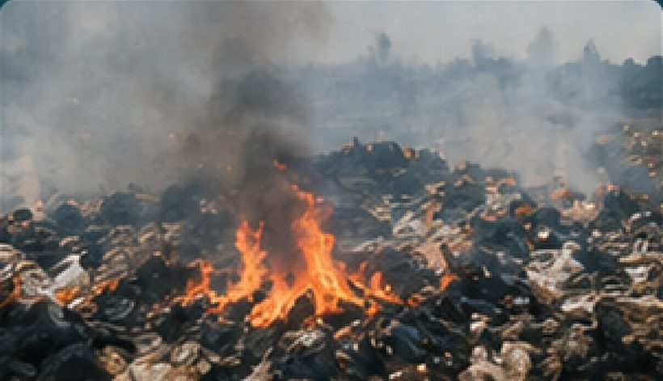
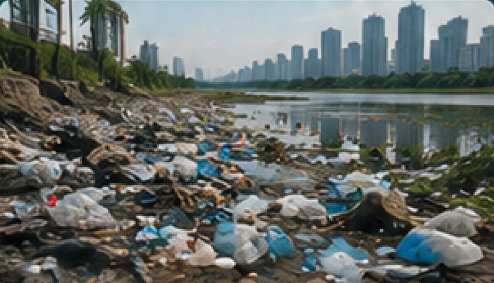

Kahon mo ngayon,
ulam mo paglaon.
Ang order mo nasa pinto na.
Ang plastic ng parcel mo, may byahe pa.
The problem
Almost every online order in the Philippines arrives wrapped in single-use plastic. Most of it is thin film that no one buys back for recycling, and no Philippine law is written for e-commerce packaging.
Our scope
We follow the plastic that comes with online orders shipped to homes in the Philippines: poly mailers, bubble wrap, air pillows, tape and labels. We trace it from checkout to where it ends up, and back to our plates.
Full scope →The scale of the problem
11,79015tonelada
Ganyan karaming e-commerce plastic packaging waste (mailer, bubble wrap, tape) ang tinatayang na-generate sa Pilipinas noong 2022, ayon sa isang pag-aaral noong 2023.

That's about
2,30026
truckloads of waste.
Illustrative comparison: 11,790 t ÷ 5.14 t per truckload (Metropolitan Manila Development Authority or MMDA: 42 truckloads = 216 t) ≈ 2,293. Weight, not volume.
Dahil sa isang parcel mo.
“Isa lang naman... Hindi lang naman ako...”
- 1Parcel

Youone parcel - 1Order15≈ 2 pieces≈ 31 g plastic
- 1Day≈ 1.04 millionorders
- 1Year

≈ 381 millionorders≈ 11,790 tonnesof plastic packaging waste
From one parcel to millions of parcels, the packaging adds up. 2 pieces per order is the study's assumption; the rest is our calculation from its 2022 inputs.
Where does this waste go?
E-commerce plastic packaging is often short-lived, but it doesn't just disappear after delivery. It can end up in dumpsites and landfills, be openly burned, or leak into the environment.

Landfills & dumpsites
Most of it ends up on land, in dumpsites, landfills or open ground, where it can persist for many years.

Open burning
Some plastic packaging is openly burned, releasing air pollutants.

Environment
A portion can leak into rivers, coastal areas, and eventually the ocean.
Figures are rounded; calculations based on the study's 2022 model assumptions.15
Images on this page are AI-generated illustrations, not real photos.